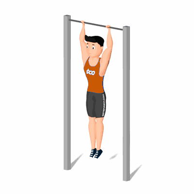

Elevação de Joelhos na Barra Fixa

Exercício com foco nos músculos do abdômen, com maior ênfase no abdômen inferior. Indicado a praticante de musculação nível intermediário.
Ficha Técnica
Tipo: Musculação
Grupo Muscular: Abdome
Aparelho: Nenhum
Músculos: Nenhum
Como realizar
- Segure-se em uma barra fixa com uma pegada pronada e com as mãos alinhadas com os ombros;
- Braços totalmente retos e seus pés sem tocar ao chão;
- Mantenha o tronco firme e use o abdômen para elevar os joelhos em direção aos ombros;
- Faça uma pausa quando as coxas estiverem na altura do tórax;
- Retorne à posição inicial.
 RC STORE
RC STORE